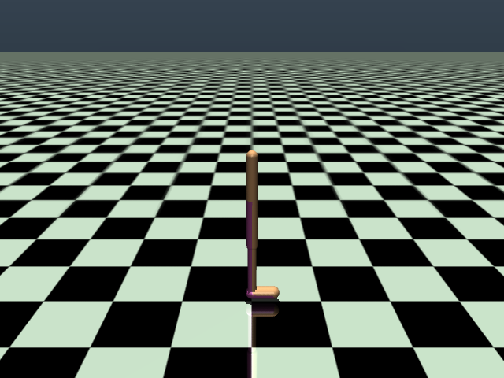
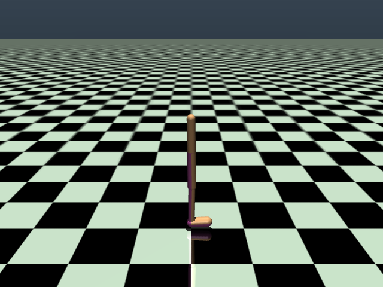
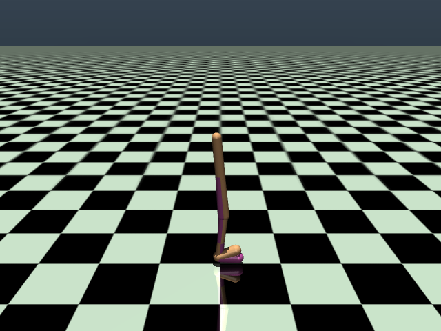
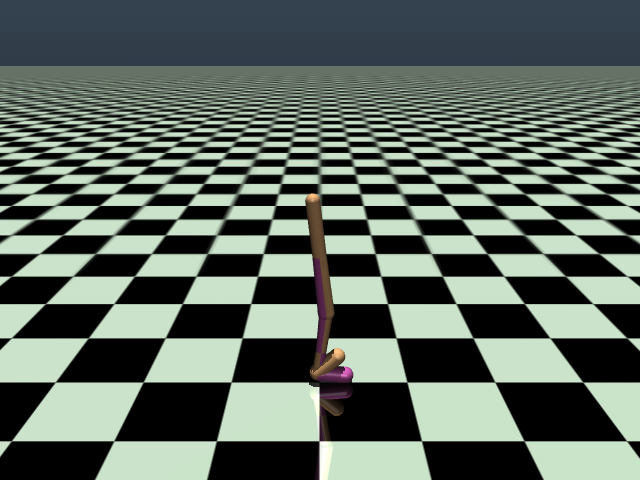
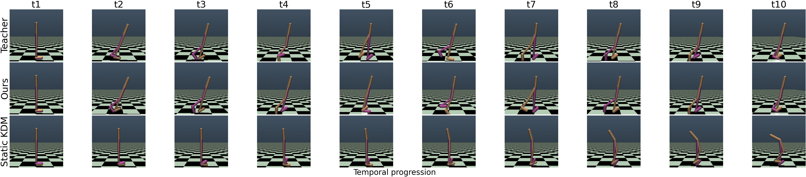
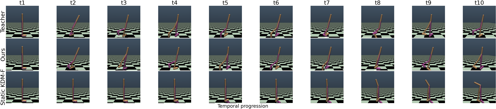
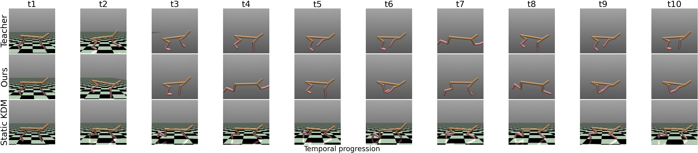
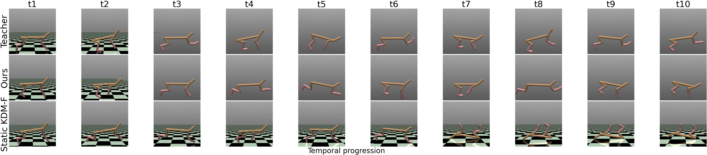

Main results
Return, latency, within-run variability \(\sigma_{\mathrm{ep}}\), and worst-case return over 5 seeds on D4RL MuJoCo locomotion. Bold / underlined = best / second-best.
| Env | Method | Return ↑ | Steps | Latency (ms) ↓ | σep ↓ | Worst-case Return ↑ |
|---|---|---|---|---|---|---|
| Walker2d | Diffusion Teacher | 1.0295 ± 0.0051 | 20 | 301.22 ± 2.41 | 0.0193 | 0.9759 |
| CD | 0.6144 ± 0.0176 | 1 | 1.09 ± 2.33 | 0.0577 | 0.4808 | |
| CT | 0.4404 ± 0.0096 | 1 | 1.09 ± 2.37 | 0.0659 | 0.2591 | |
| KDM | 0.6057 ± 0.0156 | 1 | 0.35 ± 0.04 | 0.0333 | 0.5925 | |
| KDM-F | 0.3386 ± 0.0070 | 1 | 0.87 ± 0.03 | 0.0380 | 0.3267 | |
| FKD (Ours) | 1.0973 ± 0.0002 | 1 | 1.75 ± 0.36 | 0.0004 | 1.0963 | |
| FKD (classifier) | 1.0285 ± 0.0022 | 1 | 4.57 ± 0.87 | 0.0242 | 0.9677 | |
| HalfCheetah | Diffusion Teacher | 0.8518 ± 0.0032 | 20 | 116.51 ± 2.39 | 0.0114 | 0.8229 |
| CD | 0.4027 ± 0.0109 | 1 | 1.08 ± 2.32 | 0.0277 | 0.3217 | |
| CT | 0.4089 ± 0.0047 | 1 | 1.08 ± 2.31 | 0.0198 | 0.3663 | |
| KDM | 0.6618 ± 0.0045 | 1 | 0.34 ± 0.03 | 0.0349 | 0.6571 | |
| KDM-F | 0.4852 ± 0.0098 | 1 | 0.86 ± 0.03 | 0.0216 | 0.4659 | |
| FKD (Ours) | 0.8885 ± 0.0042 | 1 | 0.82 ± 0.47 | 0.0134 | 0.8488 | |
| FKD (classifier) | 0.8599 ± 0.0010 | 1 | 1.83 ± 0.80 | 0.0081 | 0.8417 |
Teacher vs. Ours — qualitative rollout comparison (Walker2d)
Equally-spaced frames from the same seed and initial conditions. Prior one-step Koopman distillation (KDM) loses forward locomotion, while FKD reproduces the teacher's gait.
Diffusion
Teacher
Teacher


KDM
(one-step baseline)
(one-step baseline)


FKD (Ours)


One-step baseline failures (KDM / KDM-F)



